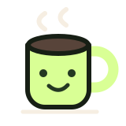

ENTRE UM CÓDIGO E OUTRO / 01
Café com robô.
Ele tem um algoritmo. Você tem café. Vamos ver quem resolve melhor.

- Você · X
- 0
- Empates
- 0
- Robô · O
- 0
Placar desta sessão, separado por dificuldade.
Como ganhar
Você é o café (X). Coloque três cafés em uma linha, coluna ou diagonal antes do robô (O). No Imbatível, seu desafio é sair com um empate.
Sem manual de 80 páginas
Toque ou clique para jogar. No teclado, use Tab ou as setas para escolher uma casa e Enter ou Espaço para marcar. Trocar as opções inicia outra rodada.
Curioso sobre o código?
A decisão do robô usa minimax: ele avalia os próximos estados do tabuleiro até vitória, derrota ou empate. O modo Imbatível escolhe sempre a melhor jogada. O Desafio mantém vitórias e bloqueios imediatos, mas permite escolhas aleatórias em outras posições. A lógica do jogo fica separada da interface e pode ser testada sem navegador.
Ver a lógica no GitHub ↗